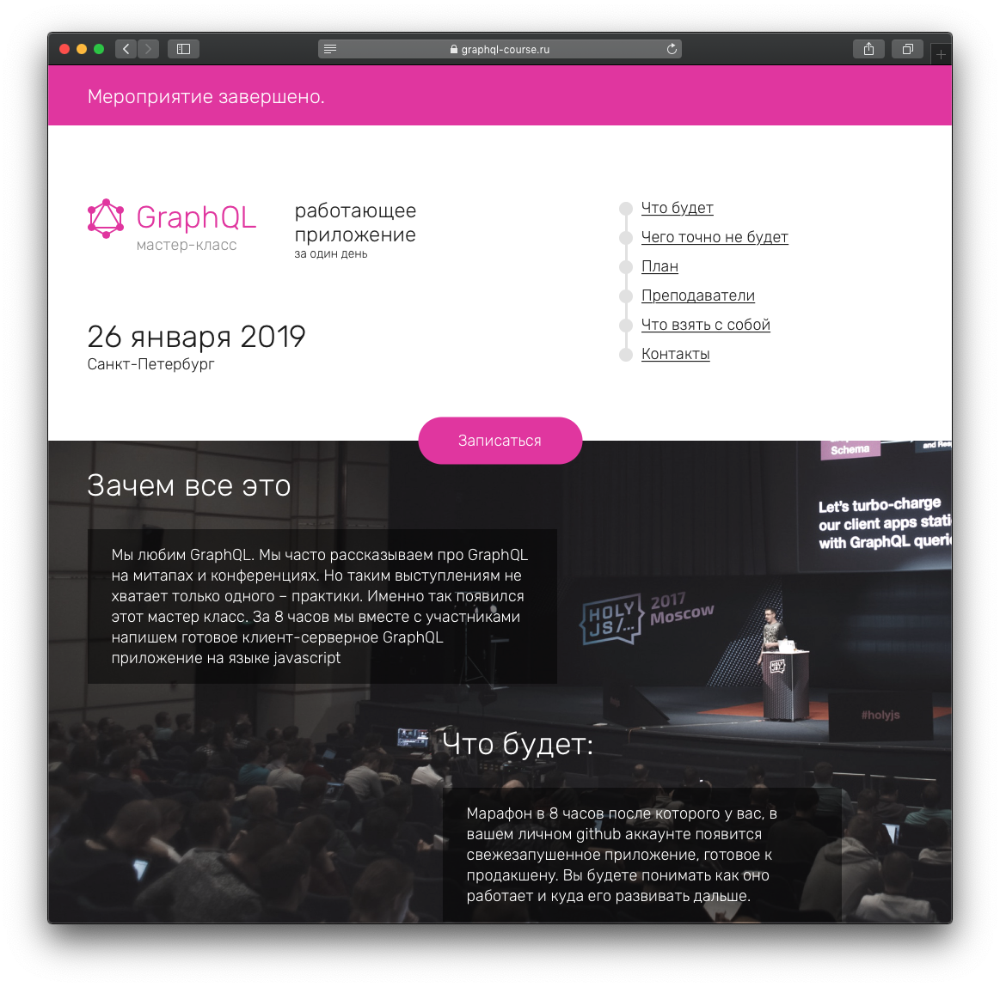
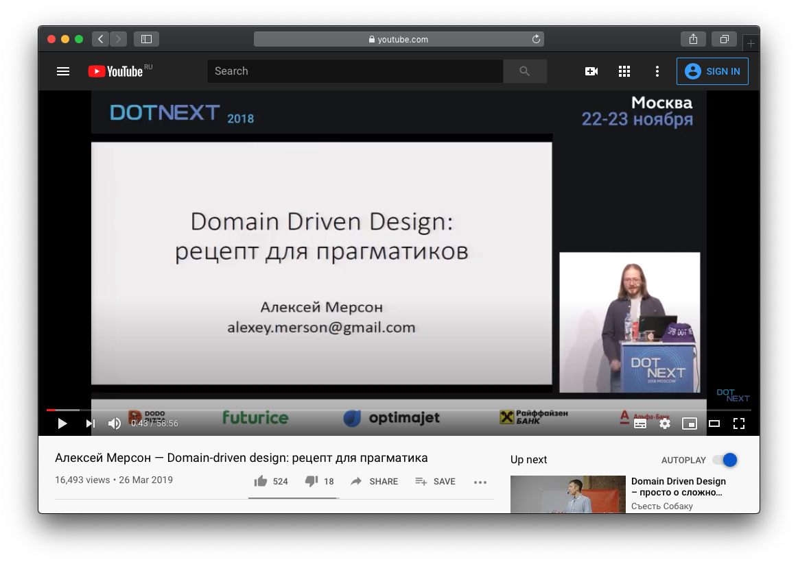
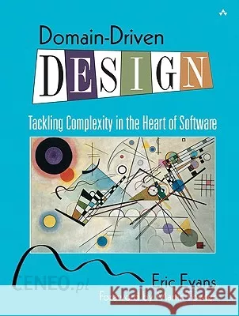
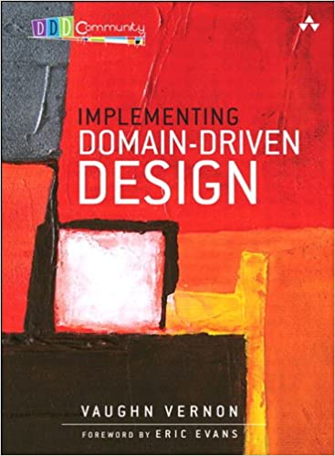
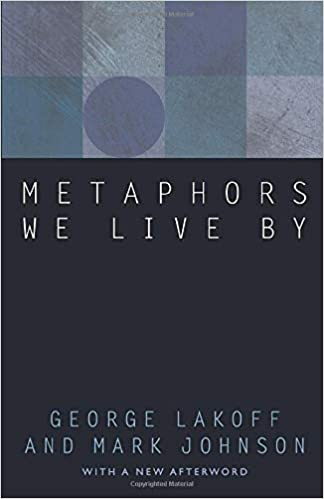

Решения,
которые мы принимаем
Личный взгляд на архитектуру
Алексей Золотых
| @zolotyh | |
| github | @zolotyh |
| telegram | @aazolotyh |
Веду тренинги, консультирую

There are only two hard things in Computer Science: cache invalidation and naming things
Название переменной
currentConference = 'HolyJS'// javascript (const or let)
current_conference = 'HolyJS'# python
sCurrentConference = 'HolyJS'// Hungarian notation
Название переменной 2
currentConference = 'HolyJS'
activeConference = 'HolyJS'
currentEvent = 'HolyJS'Пример
Infobip Moments
CSS
.b-user-profile {
...
}
Rest
/api/users/1/profile
Алексей Мерсон — Domain-driven design: рецепт для прагматика
 youtu.be/CR9mLGN9jh0Domain-Driven Design: Tackling Complexity in the Heart of Software
Implementing Domain-Driven Design
Domain-Driven Design: Tackling Complexity in the Heart of Software — лучшая книга о проектировании действительно больших enterprise-приложений, что я читал
Architecture represents the significant design decisions that shape a system, where significant is measured by cost of change
Архитектура и поэзия
Построить дом или написать стих
В саду горит костер рябины красной, Но никого не может он согреть.
Ох уж эти метафоры
Metaphors We Live By. George Lakoff and Mark Johnson
Точки зрения на архитектуру
Иногда важное неважно
The Clean Code Blog
The Clean Architecture

Cloudflare
HTTP Analytics for 6M requests per second using ClickHouse
Яндекс
Верхнеуровневая архитектура фронтенда
- 4 + 1
- Rozanski and Woods
- Zachman
Схема Закмана
ru.wikipedia.org/wiki/Модель_ЗакманаТочки зрения по Закману
- Мотивация
- Люди
- Данные
- Функции
- Место
- Время
Слои по Закману
- Контекст
- Модель бизнеса
- Системная модель
- Технологическая модель
- Детальное представление
От чего зависит архитектура
- Внешние требования (аттрибуты качества, функциональные аттрибуты)
- Внутренние требования (аттрибуты качества, функциональные аттрибуты)
- Регламенты, стандарты
- Прошлый опыт (какие гипотезы проверять в первую очередь)
- Вопросы доверия и другие человеческие факторы
- Структура команды (Закон Конвея)
- Время, ресурсы
- Законы, корпоративные ограничения
Все учесть невозможно
Евгений Кривошеев — Как не угробить архитектуру сразу же
Уровни архитектуры
Куда смотреть если смотреть некуда
Гибкость противоречит простоте
про DRY, KISS, YAGNI
// simple function
function add(x, y){
return x + y;
}
// Check that arguments are numbers
function add(x,y){
if(typeof x !== 'number' || typeof y !== 'number'){
throw new Error('can\'t summ not a number');
}
return x + y;
}
// Check that arguments are numbers
function add(x,y){
const parsedX = parseFloat(x,10);
const parsedY = parseFloat(y,10);
if(Number.isNaN(parsedX) || Number.isNaN(parsedY)){
throw new Error('can\'t summ not a number');
}
return x + y;
}
// Check that arguments are numbers
function add(x,y){
const parsedX = parseFloat(x,10);
const parsedY = parseFloat(y,10);
if(Number.isNaN(parsedX) || Number.isNaN(parsedY)){
throw new Error('can\'t summ not a number');
}
return x + y;
}
console.log(add(10, 20));// 30???
<div className="ib-checkbox">
<input type="checkbox" className="ib-checkbox--input">
</div>
<div className="ib-checkbox">
<input type="checkbox" className="ib-checkbox--input">
</div>
function bemClass(block: string) {
return (element?: string, mods?: object): string => {
if (!element) { return block; }
const result = [getElementClass(block, element)];
if (mods) {
forEach(mods, (needAdd, mod) => {
if (!needAdd) { return; }
result.push(getElementClass(block, element, mod));
});
}
return result.join(' ');
};
}
const bem = bemClass('checkbox');
export default () => (
<div class={bem()}>
<input type="checkbox" className={bem('input')}>
</div>
)
const bem = bemClass('checkbox');
export default () => (
<div class={bem()}>
<input className={classnames({
[bem('input')]: true,
[bem('input', ['checked'])]: this.props.checked
})}>
</div>
)
const bem = bemClass('checkbox');
const className = classnames({
[bem('input')]: true,
[bem('input', ['checked'])]: this.props.checked
})
const className = `ib_checkbox--input
${checked ? 'ib_checkbox--input__checked': ''}`
должна быть гибкой
TODOMVC
bit.ly/37VJEBb
render: function () {
var footer;
var main;
var todos = this.props.model.todos;
var shownTodos = todos.filter(function (todo) {
switch (this.state.nowShowing) {
case app.ACTIVE_TODOS:
return !todo.completed;
case app.COMPLETED_TODOS:
return todo.completed;
default:
return true;
}
}, this);
var todoItems = shownTodos.map(function (todo) {
return (
<TodoItem
key={todo.id}
todo={todo}
onToggle={this.toggle.bind(this, todo)}
onDestroy={this.destroy.bind(this, todo)}
onEdit={this.edit.bind(this, todo)}
editing={this.state.editing === todo.id}
onSave={this.save.bind(this, todo)}
onCancel={this.cancel}
/>
);
}, this);
var activeTodoount = todos.reduce(function (accum, todo) {
return todo.completed ? accum : accum + 1;
}, 0);
var completedCount = todos.length - activeTodoCount;
if (activeTodoCount || completedCount) {
footer =
<TodoFooter
count={activeTodoCount}
completedCount={completedCount}
nowShowing={this.state.nowShowing}
onClearCompleted={this.clearCompleted}
/>;
}
if (todos.length) {
main = (
<section className="main">
<input
id="toggle-all"
className="toggle-all"
type="checkbox"
onChange={this.toggleAll}
checked={activeTodoCount === 0}
/>
<label
htmlFor="toggle-all"
/>
<ul className="todo-list">
{todoItems}
</ul>
</section>
);
}
return (
<div>
<header className="header">
<h1>todos</h1>
<input
className="new-todo"
placeholder="What needs to be done?"
value={this.state.newTodo}
onKeyDown={this.handleNewTodoKeyDown}
onChange={this.handleChange}
autoFocus={true}
/>
</header>
{main}
{footer}
</div>
);
}
| Requirements Model | Меняется | Не меняется |
| Design Model | Гибкость | Простота |
| Implementation Model | Выносим | Инлайним |
| Requirements Model | Меняется | Не меняется |
| Design Model | Гибкость | Простота |
| Implementation Model | Выносим | Инлайним |
| Business | enterprise | startup |
| Process | Big design up front | YAGNI |
| Requirements Model | Меняется | Не меняется |
| Design Model | Гибкость | Простота |
| Implementation Model | Выносим | Инлайним |
Выводы
- Архитектура — решения
- Решения на низких уровнях должны быть согласованы с высокими
- Выбирая решение понимайте его цену. Его минусы
- Выбирая точку зрения смотрите на критичность для проекта
Спасибо!
Алексей Золотых
| @zolotyh | |
| github | @zolotyh |
| telegram | @aazolotyh |